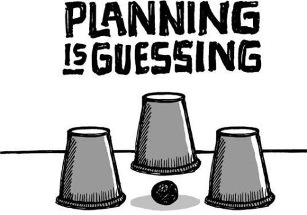

{% include JB/setup %}
{% raw %}
<div>

<h2 id="filepos29504" class="calibre19"><span class="calibre2"><a class="calibre13"></a><strong class="calibre14">Learning from mistakes is overrated</strong></span></h2><div class="calibre4"></div>
<p class="calibre7">In the business world, failure has become an expected rite of passage. You hear all the time how nine out of ten new businesses fail. You hear that your business's chances are slim to none. You hear that failure builds character. People advise, "Fail early and fail often."</p>
<p class="calibre17">With so much failure in the air, you can't help but breathe it in. Don't inhale. Don't get fooled by the stats. Other people's failures are just that: <em class="italic1">other</em> people's failures.</p>
<p class="calibre17">If other people can't market their product, it has nothing to do with you. If other people can't build a team, it has nothing to do with you. If other people can't price their services properly, it has nothing to do with you. If other people can't earn more than they spend ... well, you get it.</p>
<p class="calibre17">Another common misconception: You need to learn from your mistakes. What do you really learn from mistakes? You might learn what <em class="italic1">not</em> to do again, but how valuable is that? You still don't know what you <em class="italic1">should</em> do next.</p>
<p class="calibre17">Contrast that with learning from your successes. Success gives you real ammunition. When something succeeds, you know what worked--and you can do it again. And the next time, you'll probably do it even better.</p>
<p class="calibre17"><a class="calibre16"></a>Failure is not a prerequisite for success. A Harvard Business School study found already-successful entrepreneurs are far more likely to succeed again (the success rate for their future companies is 34 percent). But entrepreneurs whose companies failed the first time had almost the same follow-on success rate as people starting a company for the first time: just 23 percent. People who failed before have the same amount of success as people who have never tried at all.<a id="filepos31826" class="calibre16"></a><a href="Rework_split_012.html#filepos43213" class="calibre9"><sup class="calibre20"><span class="calibre6">*</span></sup></a> Success is the experience that actually counts.</p>
<p class="calibre17">That shouldn't be a surprise: It's exactly how nature works. Evolution doesn't linger on past failures, it's always building upon what worked. So should you.</p>
<p class="calibre3"><a class="calibre16"></a></p><div class="calibre4"></div>
</div>

{% endraw %}

